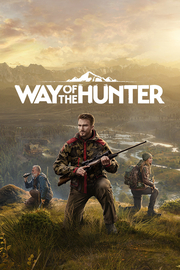

Way of the Hunter
Detalles
|  | |
| Tiempo de juego | No Jugado |
| Última actividad | Nunca |
| Añadido | 11/6/2024 14:41:31 |
| Modificado | 11/8/2024 17:37:27 |
| Estado de finalización | No Jugado |
| Librería | Playnite |
| Fuente | 6TB STORE |
| Plataforma | PC (Windows) |
| Fecha de lanzamiento | 8/16/2022 |
| Puntuación de la Comunidad | 77 |
| Puntuación de la Crítica | |
| Puntuación de usuario | |
| Género | Aventura Deportes Simuladores |
| Desarrollador | Nine Rocks Games |
| Editor | THQ Nordic |
| Característica | Cloud Saves Compat. Total Con Mando Cooperativo Cooperativo En Línea Cromos De Logros De Multijugador Préstamo Familiar Un Jugador |
| Enlaces | Punto de encuentro Discusiones Guías Noticias Página de la tienda PCGamingWiki Logros |
| Tag | 3D América Aventura Caza Coloridos Cooperativos Cooperativos en línea Disparos Exploración FPS Multijugador Mundo abierto Naturaleza Para mando Personalización de armas Primera persona Realistas Relajantes Sigilo Un jugador |
Descripción
Esta experiencia de caza auténtica te permite explorar y cazar en amplios entornos de mundo abierto de EE. UU. y Europa. Descubre animales auténticos en sus preciosos hábitats naturales y utiliza varias armas completamente realistas y detalladas.

Way of the Hunter ofrece una experiencia completamente inmersiva e integrada en una fantástica naturaleza salvaje con auténticos comportamientos de animales en grupo. Sé testigo del cambio de ecosistemas complejos que reaccionan y se adaptan a tus acciones. Aprende lo que supone ser un auténtico cazador y pon a prueba tus habilidades.

Enfréntate a los desafíos de las caza ética a través de una historia emocionante o simplemente disfruta cazando en los ricos entornos de forma libre.


Way of the Hunter ofrece una experiencia completamente inmersiva e integrada en una fantástica naturaleza salvaje con auténticos comportamientos de animales en grupo. Sé testigo del cambio de ecosistemas complejos que reaccionan y se adaptan a tus acciones. Aprende lo que supone ser un auténtico cazador y pon a prueba tus habilidades.
Enfréntate a los desafíos de las caza ética a través de una historia emocionante o simplemente disfruta cazando en los ricos entornos de forma libre.
- Decenas de especies de animales con un nivel de detalle sorprendente y con modelos de comportamiento realista que ofrecen una experiencia de caza realmente inmersiva
- Caza como un profesional con funciones que destacan las señales de los animales, el análisis de salpicaduras de sangre y la revisión del disparo gracias a la cámara de bala rebobinable
- Ábrete paso en coche o a pie y caza en dos localizaciones ricas y únicas. Tanto el Noroeste del Pacífico como Transilvania cubren cada una un terreno de 144 kilómetros cuadrados
- Usa el sentido del cazador para resaltar detalles e información importantes o desactívalo para personalizar tu pantalla de información y disfrutar de una experiencia más compleja
- Sistema de trofeos elaborado que genera astas y cuernos únicos según varios factores, como la edad y el estado físico
- Las animaciones y las reacciones de los animales al sentir la presencia del jugador son naturales y sofisticadas
- Ciclo de 24 horas de día y noche con viento y climatología que cambia
- Simulación realista de balística y física de balas
- Ciclo de 24 horas de día y noche con viento y climatología que cambia
- Economía dentro del juego que te permite faenar y vender la carne para comprar nuevas herramientas, pases de cazador y taxidermia para tu vitrina de trofeos
- Una historia emocionante sobre las vicisitudes de una familia en el negocio de la caza, y la rivalidad y las amistades con las que se encuentran
- Disfruta de la aventura de caza perfecta con amigos en el modo cooperativo
- Modo foto intuitivo para capturar y compartir tus momentos favoritos